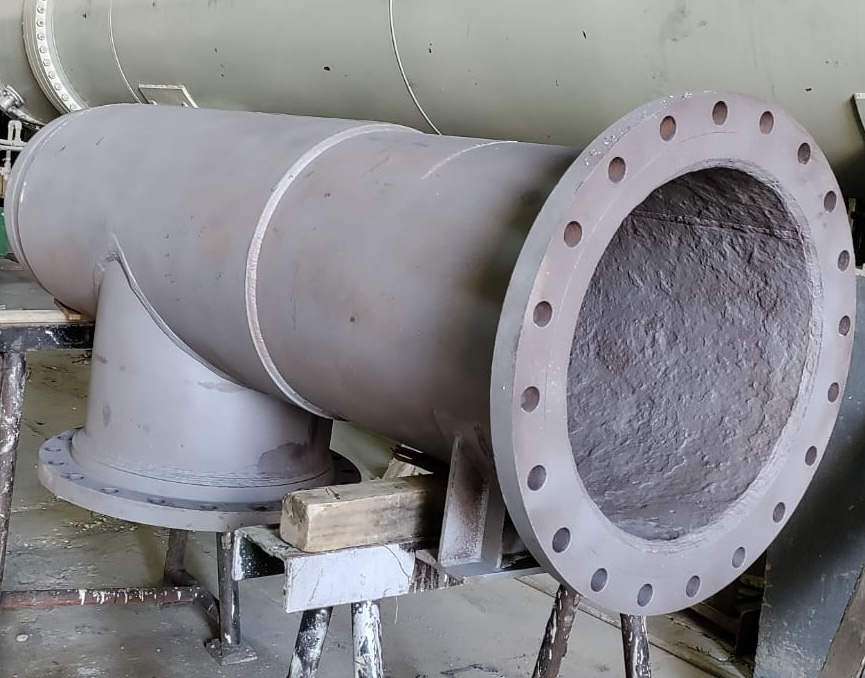
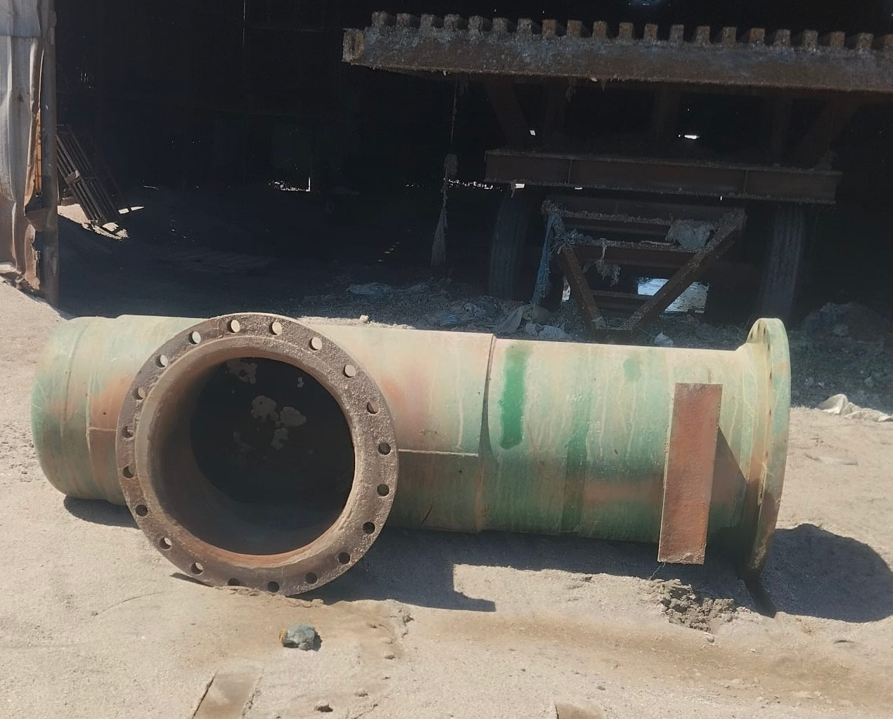
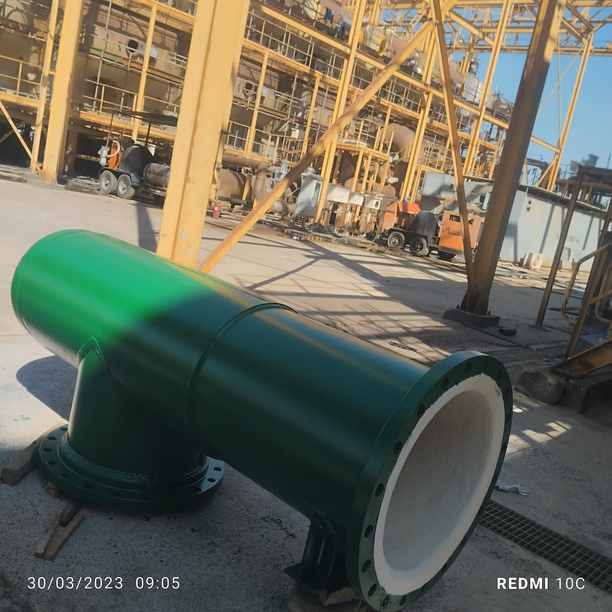

Internal glass flake vinyl ester lining system engineered to withstand continuous acid transport — providing a total chemical barrier for pipelines handling sulphuric, hydrochloric, and other aggressive acids
Pipelines used for transporting acids — including sulphuric acid (H₂SO₄), hydrochloric acid (HCl), phosphoric acid (H₃PO₄), and other highly corrosive chemicals — face some of the most extreme conditions in industrial service. Unprotected carbon steel corrodes within days under continuous acid contact, leading to rapid wall thinning, perforation, and catastrophic leaks.
The challenge is compounded when a single pipeline system must handle multiple corrosive chemicals — either sequentially during different process cycles or as mixed acid streams. Standard coatings cannot withstand the broad chemical spectrum, and exotic alloys drive costs to prohibitive levels. The client required a lining system that could resist a wide range of acids at varying concentrations and temperatures, all while maintaining long-term integrity.
Any coating failure in acid service is not just a maintenance issue — it is a safety and environmental hazard. A pinhole or delamination under acid conditions can escalate to a full pipeline breach in a matter of hours.
Acids attack carbon steel through direct electrochemical dissolution — hydrogen ions strip electrons from the metal surface, converting solid steel into soluble metal salts. Sulphuric acid at concentrations between 20–80% is particularly aggressive, causing general corrosion rates exceeding 5 mm/year on unprotected steel. Hydrochloric acid is even more aggressive, attacking virtually all common metals and alloys. Only specialized barrier coatings — such as glass flake vinyl ester — can provide reliable, long-term protection across the full acid spectrum.
Primary Surface Solutions specified and applied a glass flake vinyl ester lining system — the industry standard for multi-chemical acid service. The overlapping glass flakes within the vinyl ester resin matrix create a tortuous diffusion path that dramatically slows chemical permeation, while the vinyl ester resin provides inherent resistance to a broad range of acids, solvents, and oxidising agents.
Full abrasive blast cleaning to SA 2.5 / NACE 2 on all internal surfaces. Surface profile verified to ensure proper mechanical key. All weld seams ground smooth and sharp edges rounded to prevent coating bridging — critical in acid service where any thin spot becomes a failure point.
High-build vinyl ester primer applied to establish a chemical bond with the prepared steel substrate. The primer penetrates the blast profile, sealing the steel surface and providing the foundation for the glass flake barrier coats.
Multiple coats of glass flake vinyl ester applied to achieve the specified DFT. Each coat contains millions of overlapping glass flakes that align parallel to the surface, creating an impermeable barrier. The system resists sulphuric acid, hydrochloric acid, phosphoric acid, acetic acid, and many other corrosive chemicals simultaneously.
Holiday (spark) testing at full voltage on all internal surfaces. DFT verification at multiple points along each pipe spool. Adhesion pull-off tests and full visual inspection. Complete documentation package delivered for the client's records.



The glass flake vinyl ester lining system provides a proven, long-term barrier against a wide range of corrosive acids. By eliminating the need for exotic alloy piping, the client achieves significant cost savings while gaining superior chemical resistance. The lining system allows standard carbon steel pipelines to safely transport acids that would otherwise require expensive alloy or lined alternatives.
Our glass flake vinyl ester systems protect pipelines against sulphuric acid, hydrochloric acid, and a wide range of aggressive chemicals. Let's discuss your project.